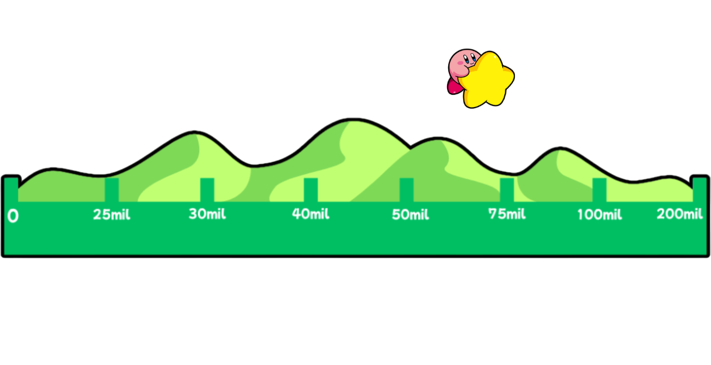

Adéntrate en otra dimensión con Kirby como compañero, saca partido de las habilidades de copia adaptadas a gameplay en 3D y desentraña el origen de este caos en Kirby Dimension Hopping para Nintendo Switch.
Música
Aquí puedes escuchar el tema principal del juego, donde remixeamos una canción pasada de Kirby, adaptándola a la nueva dimensión donde transcurre la aventura.
Campaña
En un día cualquiera en Popstar, un siniestro portal aparece entre las nubes y absorbe cada cosa que encuentra en su camino, inclusive, ¡a nuestro héroe Kirby! Después de un rato, al recuperar el conocimiento, se encuentra cara a cara con un mundo familiar pero distinto al suyo. Ahora le toca descubrir qué ha pasado con sus amigos, encontrar al culpable de este evento paranormal y conseguir el apoyo de los habitantes de esta extraña dimensión, todo con el fin de arreglar lo sucedido y volver a casa.
Nada más llegar a este mundo desconocido, una nueva aliada, Ivory, se une a Kirby, con la esperanza de que la ayude a encontrar a su hermano, Ebony. Aún así, hay muchas preguntas por resolver… ¿De dónde ha salido? ¿Tendrá algo que ver con el misterioso acontecimiento?
Gameplay
Kirby Hopping Dimensions es un plataformas de acción desarrollado por ForFun. En él, los jugadores podrán explorar varios niveles interdimensionales, cada uno con mecánicas y estética propia.
Además, ¡múltiples habilidades de copia estarán a tu disposición para superar los peligros en el camino! Fuego, espada, cuchillo, hielo y muchas otras te ayudarán a la hora de explorar el entorno y encontrar grandes tesoros.
Kirby no estará solo durante este periplo pues, gracias a las poderes dimensionales de Ivory, antiguos aliados de toda la franquicia podrán aparecer para ayudarle en momentos peliagudos.
Metas

25.000€ -> Lanzar el juego.
30.000€ -> Traducciones adicionales.
40.000€ -> Modo co-op.
50.000€ -> Un mundo adicional.
75.000€ -> Modo de juego adicional.
100.000€ -> Personajes jugables adicionales.
200.000€ -> Versión optimizada y contenido extra para Nintendo Switch 2.
Contribuciones
Jinete aéreo- 25€:
Aparición en los créditos del juego
Acceso exclusivo al boletín de noticias
Super Star - 50€:
CD exclusivo del soundtrack del juego
Acceso a la Beta
Acceso al discord del juego, donde podrás participar en discusiones y votaciones sobre este
Ultra Star - 100€:
Artbook físico
Poster de la carátula del juego
Llavero exclusivo de Kirby
Aliado Estelar - 250€:
Cameo en el juego a modo de Easter Egg
Edición limitada del juego, incluye el artbook, CD del soundtrack y tres pósters del juego
Figura de Kirby e Ivory pintada a mano
*Cada nivel de recompensa incluye al nivel o niveles anteriores.
Equipo
Somos un equipo pequeño con gran potencial:
Leila: Diseñadora de modelos 3D. (Programación de la página web, dibujos, redacción de textos y dibujo principal).
Pablo: Programador jefe. (Dibujos, sombreado de personajes, y dibujo principal).
Sergio: Diseñador de concept art. (Edición de video, composición musical, redacción de textos, dibujos y dibujo principal).
Hugo: Creador de SFX. (Creación tanto del logo de equipo como del videojuego y portada del video promocional).
Óscar: Guionista. (Programación de la página web, dibujos y redacción de textos).
Miguel: Creador de Música. (Tipografías).
Preguntas Frecuentes
¿En qué plataformas estará disponible?
El juego será exclusivo de Nintendo Switch. Una versión mejorada y con niveles extra para Nintendo Switch 2 también está planeada en caso de que alcancemos nuestra meta.
¿En qué idiomas estará disponible?
Por el momento, estará disponible en inglés, español y japonés. A medida que avance la campaña y contemos con más traductores, se irán ampliando las opciones de idioma.
¿Cuál será la fecha de salida?
Por el momento estimamos terminar la producción a mediados de 2026, pero esta fecha podría verse alterada según avance la campaña.
¿Cuál es el tiempo de envío estimado para las recompensas de los contribuyentes/mecenas?
Al ser envío internacional, gran parte del proceso dependerá del lugar y la empresa de logística en cuestión. Desde nuestro equipo, el tiempo estimado será de dos a cuatro días laborables a partir de la salida del juego.
Comentarios
Elsa Pato: Estoy esperando a que salga este juego, que emoción!!! 😁😁😁
Héctor Tuga: La primera vez que pago un kickstarter porque esto se ve guapazo
Victor Tillas: Callese y tome mi dinero
Mónica Galindo: VAAAAMMOOOOSSSSS!!!!!11!11!!!
Tomas Te: Poyo!
Elvi Ernes: Buena suerte en el proyecto
Elsa Bado: Cuando vi a Kirby me enamoré
Redes sociales
Desarrollado por:
Integración de la página con las redes sociales del producto, por ejemplo, incluir el feed de Twitter o de Instagram embebido en la página.
Instagram:
Twitter/X:
Reddit:
YouTube
Discord:
ATENCIÓN:
Esta página simula la campaña de microfinanciación de un videojuego ficticio y no representa un producto real. Práctica de Multimedia, 1º GDDV- Curso 24/25 (Móstoles/Quintana), URJC. La URJC no se hace responsable del contenido expuesto por el autor.